第34项限定修整：环境光与接触影、多人辨识、手机实战布局。关卡、战斗规则、既有美术素材保持不变。以下均为实际网页渲染和真实输入录像；没有概念图，也没有修改生命、位置或时间来布置画面。
晨街与夜岸的多人/出手对照恢复同一份合法输入存档，24项战局字段完全一致。单人图为各关待开始画面。录像为独立的普通操作过程，原尺寸录制，MP4仅转码；手机最终短片截取原录像前12秒，无补帧或生成片段。点击图片查看原始PNG。
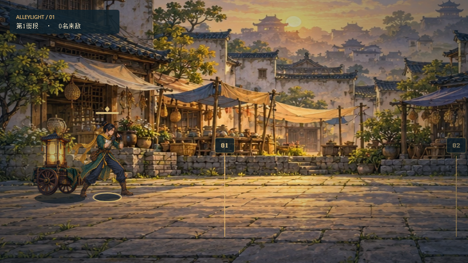
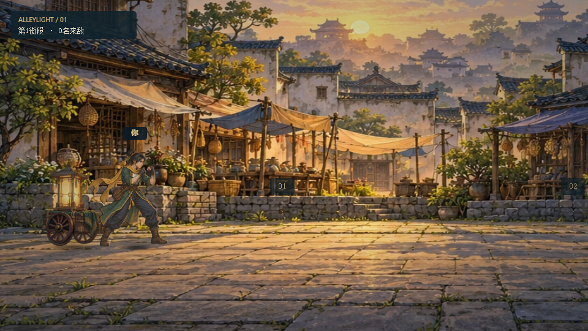
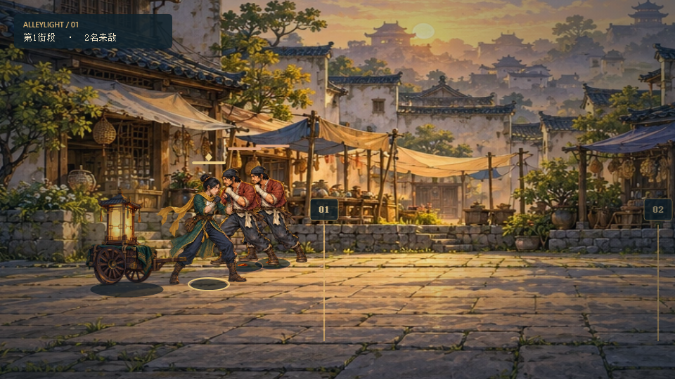
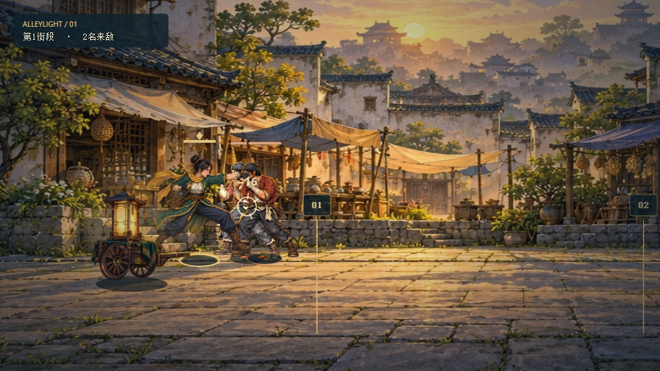
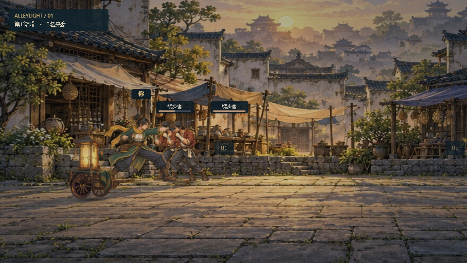
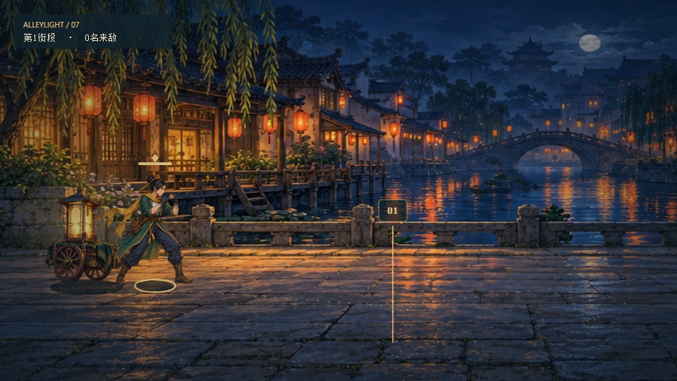
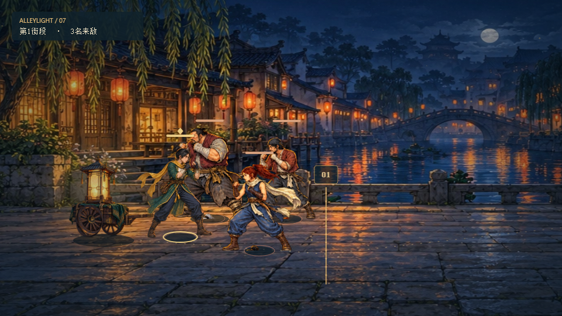
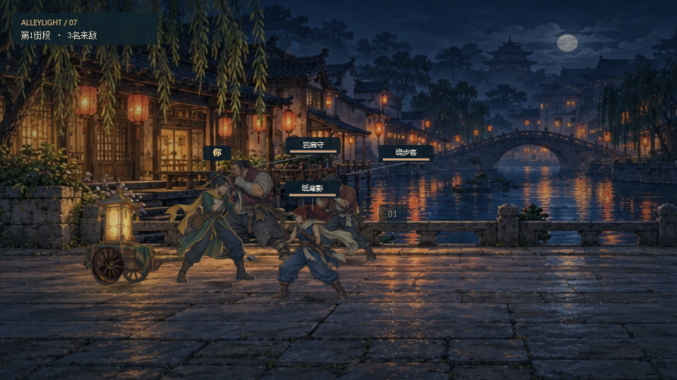
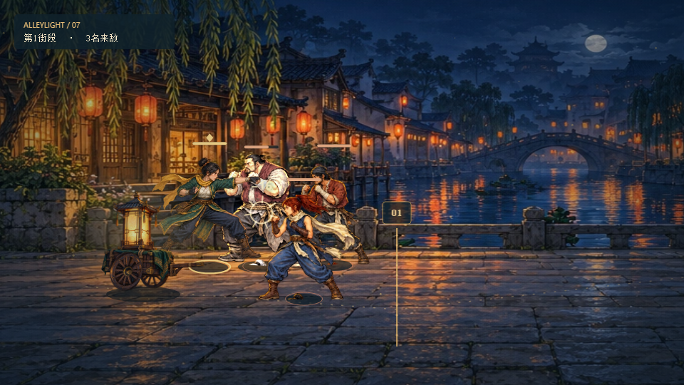
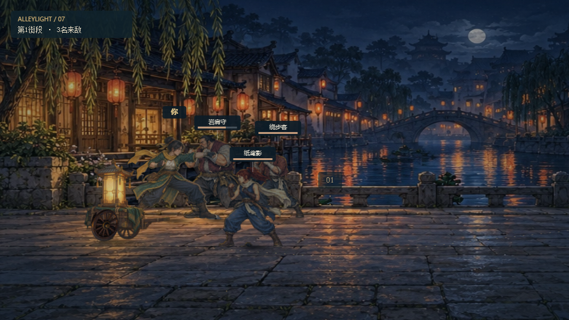
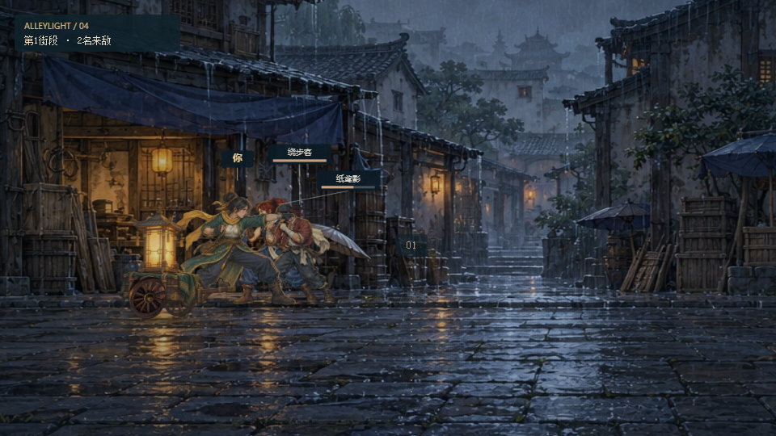
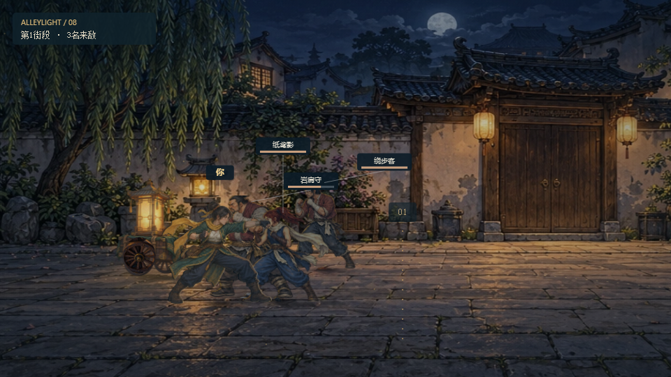
390×844 竖屏：实战画面从360×203、顶端277px，调整为390×582、顶端48px。844×390 横屏：642×348，操作键放在右侧。手机标签使用单独的阅读尺度；主要触控按钮至少44×44px。信息、手册和街巷册会暂停。
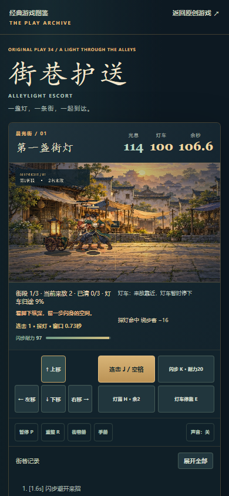
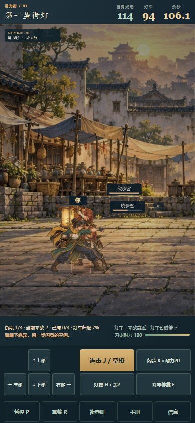
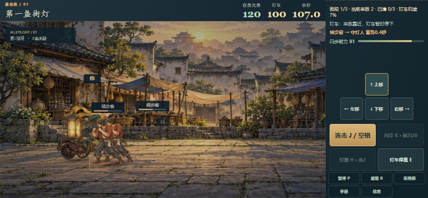
本地及公开站验证报告分别记录真实键盘/触控完整通关、暂停旋转、24字段刷新恢复与资源检查。浏览器自动化和帧序列只能证明这些具体行为；触感、持续多人遮挡和长时间阅读舒适度仍需要真人评审。未测试实体手机、Safari及各机型的动态地址栏和安全区。
修整前采集记录 · 修整后采集记录 · 最终本地验证 · 录像尺寸与编码 · 公开站操作验收 · 253个运行文件哈希 · 公开视频解码